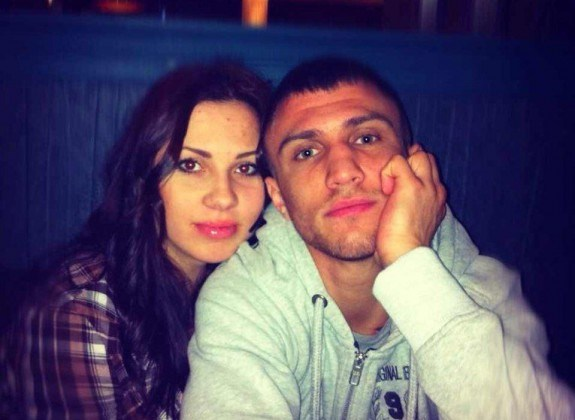
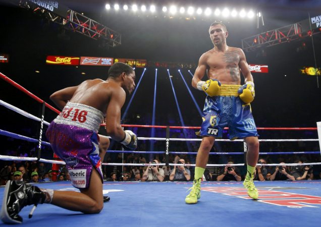
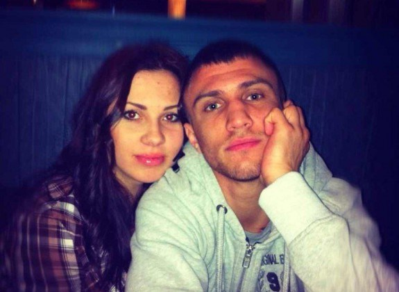
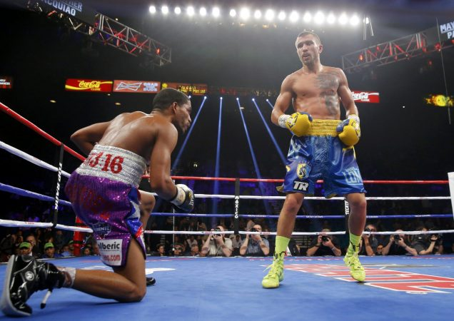

Slider Animation
Click on a picture and move it to left or to right
Toronto
Slide Show
Click Next/Previous buttonGrid Animation
Click right sidebar buttons
run effect

Click Animation
Click photoPlease wait until the images are loaded.


 


